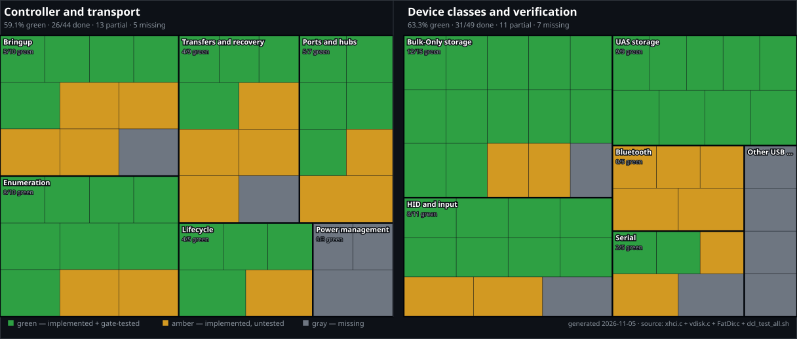

XenevaOS xHCI/USB readiness
Generated 2026-11-05 from KernelAA64/Usb/xhci.c, KernelAA64/Fs/vdisk.c, KernelAA64/Fs/Fat/FatDir.c, and Tests/dcl_test_all.sh. 61.3% green (57/93): 24 partial and 12 missing. Green means implemented and exercised by the DCL xHCI gate; amber means implemented but untested or only conditionally tested; gray means absent. One cell is a curated capability, not a line of code, so the percentage is a readiness summary rather than an automated coverage number.

| Panel | Group | Green | Partial | Missing | Total | Green share |
|---|
| Controller and transport | Bringup | 5 | 4 | 1 | 10 | 50% |
| Controller and transport | Ports and hubs | 5 | 2 | 0 | 7 | 71% |
| Controller and transport | Enumeration | 8 | 2 | 0 | 10 | 80% |
| Controller and transport | Transfers and recovery | 4 | 4 | 1 | 9 | 44% |
| Controller and transport | Lifecycle | 4 | 1 | 0 | 5 | 80% |
| Controller and transport | Power management | 0 | 0 | 3 | 3 | 0% |
| Device classes and verification | HID and input | 8 | 2 | 1 | 11 | 73% |
| Device classes and verification | Bulk-Only storage | 12 | 2 | 1 | 15 | 80% |
| Device classes and verification | UAS storage | 9 | 0 | 0 | 9 | 100% |
| Device classes and verification | Serial | 2 | 2 | 1 | 5 | 40% |
| Device classes and verification | Bluetooth | 0 | 5 | 0 | 5 | 0% |
| Device classes and verification | Other USB classes | 0 | 0 | 4 | 4 | 0% |
| All | Total | 57 | 24 | 12 | 93 | 61% |
|---|
Still needed
Controller and transport
Bringup5/10
- 32-bit DMA ceiling partial — Implemented, but QEMU advertises 64-bit addressing, so the low-4-GiB path never runs.
- Controller page size partial — Implemented, but every test boots with 4 KiB controller pages.
- Scratchpad buffers partial — QEMU reports zero scratchpads; allocating a non-zero scratchpad array is not exercised.
- BIOS legacy handoff partial — Implemented; QEMU exposes no legacy capability, so BIOS handoff never runs.
- Debug capability missing — The xHCI debug capability is not implemented.
Ports and hubs5/7
- USB 3.0 hub partial — The SuperSpeed hub path exists, but the gate attaches only a USB 2.0 usb-hub.
- Overcurrent recovery partial — Overcurrent changes are cleared and logged; no test injects an overcurrent event.
Enumeration8/10
- Transaction translator for low/full speed partial — TT fields exist for low/full-speed children behind a high-speed hub; the gate's hub is full speed, so the path is unused.
- Large configuration descriptors partial — The big-config boot is skipped unless QEMU provides the test-only usb-storage-bigcfg model.
Transfers and recovery4/9
- Transfer timeout handling partial — Timeouts are logged and the command ring can recover, but no test forces a timed-out transfer.
- Endpoint halt recovery partial — Stop/Reset/Set-Dequeue recovery exists, but no test halts an endpoint.
- Command ring abort and restart partial — Ring abort and restart are implemented for stuck commands; no test forces a command timeout.
- Isochronous OUT partial — Wired for USB Bluetooth SCO; no test adapter emits isochronous traffic.
- Isochronous IN missing — Only isochronous OUT exists; there is no isochronous IN ring.
Lifecycle4/5
- Surprise-unplug volume detach partial — QEMU device_del detaches /b and a replug reattaches it; the gate checks vdisk reuse but does not assert the detach itself.
Power management0/3
- Suspend and resume missing — Port suspend/resume and U3 transitions are not implemented.
- USB link power management missing — USB link power management (LPM) is not implemented.
- ACPI power transitions missing — There is no ACPI power-transition handling for the controller.
Device classes and verification
HID and input8/11
- Relative pointer and wheel partial — Relative motion and wheel fields are decoded, but the gate's tablet is absolute and has no wheel.
- Composite HID interfaces partial — Multiple HID interfaces per device are collected and armed; the gate devices are single-interface.
- Gamepad and consumer controls missing — No gamepad, consumer-control, or other HID usage maps to the input API.
Bulk-Only storage12/15
- BOT reset recovery partial — Reset recovery exists, but no test forces a transport or phase error.
- SYNCHRONIZE CACHE partial — SYNCHRONIZE CACHE runs after writes and on vdisk flush, but no gate assertion checks the flush result.
- SCSI UNMAP/TRIM missing — SCSI UNMAP/TRIM is not implemented.
UAS storage9/9
Serial2/5
- CDC ACM probe and line coding partial — CDC ACM parsing and line coding exist; the gate only attaches QEMU's FTDI clone.
- Serial read/write path partial — The VFS read/write callbacks exist, but no test opens /dev/ttyUSB and moves bytes.
- CDC notifications and flow control missing — The CDC notification pipe is configured but never polled; flow control is not implemented.
Bluetooth0/5
- USB HCI class probe partial — USB HCI class probing exists; no gate test attaches a Bluetooth adapter.
- HCI event and bulk pipes partial — Event and bulk pipes are wired for HCI; untested without a USB adapter.
- SCO isochronous pipes partial — Isochronous OUT is wired for SCO; isochronous IN is missing and no adapter is tested.
- Kernel Bluetooth bridge partial — The bridge to the kernel Bluetooth stack exists; no USB adapter is tested.
- USB BT hotplug attach/detach partial — Attach/detach hooks exist; no USB Bluetooth hotplug test.
Other USB classes0/4
- USB audio class missing — No USB audio class driver.
- USB network (CDC ECM/NCM) missing — No CDC ECM/NCM network class driver.
- USB video class missing — No USB video class driver.
- USB printer class missing — No USB printer class driver.
Green features and evidence (57)
- PCIe discovery and BAR mapping (Controller and transport / Bringup) — exercised by every gate boot
- Controller reset and start (Controller and transport / Bringup) — exercised by every gate boot
- Command and event rings (Controller and transport / Bringup) — exercised by every gate boot
- MSI-X interrupt handling (Controller and transport / Bringup) — gate assertion
[xhci]: irq delivered - Extended capabilities and protocols (Controller and transport / Bringup) — gate assertion
[xhci]: ext cap 2 protocol - Root-port power and reset (Controller and transport / Ports and hubs) — exercised by every gate boot
- Root-port hotplug (Controller and transport / Ports and hubs) — gate assertion
[xhci-hotplug]: enumerated port - USB 2.0 hub (Controller and transport / Ports and hubs) — gate assertion
[xhci]: hub ready on port - Multi-tier hub scan (Controller and transport / Ports and hubs) — gate assertion
[xhci-hub]: child enumerated on port 8.8.1 - Hub port power and reset (Controller and transport / Ports and hubs) — gate assertion
[xhci-hub]: child enumerated on port - Device descriptor (Controller and transport / Enumeration) — exercised by every gate boot
- Configuration descriptor (Controller and transport / Enumeration) — exercised by every gate boot
- String descriptors (Controller and transport / Enumeration) — gate assertion
[xhci]: product QEMU USB Keyboard - Set configuration (Controller and transport / Enumeration) — exercised by every gate boot
- Class-driver dispatch (Controller and transport / Enumeration) — gate assertion
[xhci]: HID keyboard ready on port - Unsupported class handling (Controller and transport / Enumeration) — host helper check
has no supported interface - SuperSpeed companion descriptors (Controller and transport / Enumeration) — gate assertion
[xhci]: ss companion ep - EP0 max packet update (Controller and transport / Enumeration) — gate assertion
[xhci]: ep0 max packet 64 - Control transfers (Controller and transport / Transfers and recovery) — exercised by every gate boot
- Interrupt IN transfers (Controller and transport / Transfers and recovery) — gate assertion
[xhci-hid]: poll thread running - Bulk IN transfers (Controller and transport / Transfers and recovery) — gate assertion
[xhci-msc]: read lba0 - Bulk OUT transfers (Controller and transport / Transfers and recovery) — gate assertion
[xhci-msc]: write lba0 ok - Slot allocation and addressing (Controller and transport / Lifecycle) — exercised by every gate boot
- Disconnect and release (Controller and transport / Lifecycle) — gate assertion
[xhci-hotplug]: disconnect on port - DMA reclaim and replug reuse (Controller and transport / Lifecycle) — host helper check
[xhci-msc]: vdisk reuse slot - Hotplug while HID polling (Controller and transport / Lifecycle) — host helper check
[xhci-hid]: key 30 down - Boot keyboard (Device classes and verification / HID and input) — gate assertion
[xhci]: HID keyboard ready on port - Boot pointer/tablet (Device classes and verification / HID and input) — gate assertion
[xhci]: HID pointer ready on port - HID report descriptor parser (Device classes and verification / HID and input) — gate assertion
[xhci-hid]: report iface - Report ID support (Device classes and verification / HID and input) — gate assertion
[xhci-hid]: report iface 0 len 110 fields 4 kind pointer ids 1 - Generic keyboard decoder (Device classes and verification / HID and input) — gate assertion
[xhci-hid]: key 1E down - Generic absolute pointer decoder (Device classes and verification / HID and input) — host helper check
[xhci-hid]: pointer - Keyboard LED output (Device classes and verification / HID and input) — host helper check
[xhci-hid]: leds 2 - HID poll thread (Device classes and verification / HID and input) — gate assertion
[xhci-hid]: poll thread running - Bulk-Only CBW/CSW transport (Device classes and verification / Bulk-Only storage) — gate assertion
[xhci-msc]: inquiry - SCSI INQUIRY (Device classes and verification / Bulk-Only storage) — gate assertion
[xhci-msc]: inquiry - READ CAPACITY (10/16) (Device classes and verification / Bulk-Only storage) — gate assertion
[xhci-msc]: capacity 3145728 MB x 512 bytes - READ/WRITE (10/16) (Device classes and verification / Bulk-Only storage) — gate assertion
[xhci-msc]: read lba0 58 45 4E 45 - 64-bit LBA access (Device classes and verification / Bulk-Only storage) — gate assertion
[xhci-msc]: read last lba ok - REQUEST SENSE / CHECK CONDITION (Device classes and verification / Bulk-Only storage) — gate assertion
[xhci-msc]: sense status 1 key 7 asc 27 - REPORT LUNS and multi-LUN (Device classes and verification / Bulk-Only storage) — gate assertion
[xhci-msc]: report luns 1 - Vdisk reuse across replug (Device classes and verification / Bulk-Only storage) — host helper check
[xhci-msc]: vdisk reuse slot - GPT partition scan (Device classes and verification / Bulk-Only storage) — gate assertion
[vdisk]: USB QEMU HARDDISK gpt partition 1 lba 2048 - FAT32 mount (Device classes and verification / Bulk-Only storage) — gate assertion
[fat]: USB QEMU HARDDISK mounted at - FAT directory enumeration (Device classes and verification / Bulk-Only storage) — gate assertion
[dcltest] PASS vfs usb dir lists entries (1) - Runtime unmount and remount (Device classes and verification / Bulk-Only storage) — gate assertion
[dcltest] PASS vfs unmounts usb volume (1) - UAS endpoint discovery (Device classes and verification / UAS storage) — gate assertion
[xhci-uas]: inquiry QEMU HARDDISK - Stream context arrays (Device classes and verification / UAS storage) — gate assertion
[xhci]: primary stream arrays - Streams enabled (Device classes and verification / UAS storage) — gate assertion
[xhci-uas]: streams enabled - No-stream shared rings (Device classes and verification / UAS storage) — gate assertion
[xhci-uas]: streams off, shared rings - Command and status IUs (Device classes and verification / UAS storage) — gate assertion
[xhci-uas]: read lba0 58 45 4E 45 - Data IUs (Device classes and verification / UAS storage) — gate assertion
[xhci-uas]: write lba0 ok - Multi-LUN discovery (Device classes and verification / UAS storage) — gate assertion
[xhci-uas]: report luns 1 - UAS sense handling (Device classes and verification / UAS storage) — gate assertion
[xhci-uas]: capacity - Stream release on replug (Device classes and verification / UAS storage) — host helper check
[xhci-uas]: vdisk reuse slot - FTDI probe and init (Device classes and verification / Serial) — gate assertion
[xhci-serial]: FTDI ready - ttyUSB VFS node (Device classes and verification / Serial) — gate assertion
[xhci-serial]: /dev/ttyUSB
Progress history · Raw JSON
Edit the feature matrix in Tools/xhci-progress.py, then rerun python3 Tools/xhci-progress.py. The generator fails if a declared code or test marker disappears.